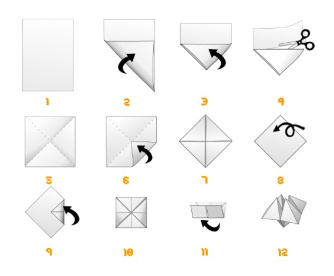

Pôle Formation UIMM - CVDL
Important
Aujourd’hui, vous êtes une ligne de production. Vous avez un client, un contrat, une cadence et des délais.
Vous allez produire trois vacations dans trois organisations différentes, et mesurer vous-même ce qui change. Aucun chiffre de ce livret n’est donné à l’avance : ce sont les vôtres qui rempliront les tableaux.
Affiché au mur pendant toute la journée. Vous vous y référerez souvent.
| Clause | Valeur |
|---|---|
| Volume par vacation | 24 pièces conformes |
| Durée de la vacation | 16 minutes |
| Enlèvements | 1 camion toutes les 4 minutes, 6 pièces par camion |
| Qualité | Zéro défaut accepté, le tri est à votre charge |
| Retard | Toute pièce manquante à un enlèvement reste due |
\[ \text{Takt Time} = \frac{\text{Temps disponible}}{\text{Demande client}} = \frac{16 \times 60\ \text{s}}{24\ \text{pièces}} = 40\ \text{s/pièce} \]
Une pièce doit sortir de la ligne toutes les 40 secondes. Ni plus vite, ni moins vite. Vous verrez au cours de la journée pourquoi « plus vite » n’est pas un bon résultat.
| Rôle | Mission |
|---|---|
| Opérateur P1 à P4 | Réaliser l’opération de son poste, selon le standard affiché |
| Lanceur | Attribuer les jetons, noter l’heure de lancement, gérer le stock matière |
| Client / Expéditeur | Contrôler les pièces à réception, noter l’heure de sortie, charger les camions, refuser les non-conformes |
| Chronométreur | Relever les temps de cycle poste par poste |
| Observateur | Compter les en-cours par zone, observer les comportements |
Les rôles hors production tournent entre les rounds. Les opérateurs restent à leur poste, pour que les mesures restent comparables d’un round à l’autre.
Mon rôle :
| Round 1 | Round 2 | Round 3 |
|---|---|---|
Objectif : une cocotte symétrique, qui s’ouvre et se ferme sans forcer, sans déchirure.
Matière : 1 feuille A4 blanche 80 g/m².
| Étape | Action | Point clé |
|---|---|---|
| 1 | Les diagonales | Marquer les deux plis en croix, coin à coin. Ils localisent le centre. |
| 2 | Premier blintz | Rabattre les 4 coins vers le centre. Les bords ne se chevauchent pas. |
| 3 | Le retournement | Retourner la feuille, face lisse vers soi. Conditionne l’ouverture finale. |
| 4 | Second blintz | Rabattre les 4 nouveaux coins vers le centre. Appuyer fort. |
| 5 | Pré-formage | Plier en deux horizontalement, puis verticalement. Bien marquer. |
| 6 | Mise en volume | Glisser les doigts dans les 4 poches et pousser vers le centre. |

| # | Critère | Contrôle |
|---|---|---|
| 1 | Symétrie | Les 4 pointes à la même hauteur |
| 2 | Mobilité | S’ouvre et se ferme sans résistance, 3 actionnements dans les deux axes |
| 3 | Intégrité | Aucune déchirure, aucun pli parasite |
Une pièce refusée par le client va dans le bac rouge. Elle est comptée en rebut et n’est jamais recomptée.
| Poste | Opérations |
|---|---|
| P1 | Débit matière : triangle, découpe de la chute, carré 210 × 210 |
| P2 | Diagonales puis premier blintz |
| P3 | Retournement puis second blintz |
| P4 | Pré-formage et mise en volume |
Chaque pièce lancée reçoit un jeton numéroté, fixé par un trombone, qui l’accompagne jusqu’à la sortie.
Le tableau des jetons affiche les jetons disponibles. Un emplacement vide signifie une pièce quelque part dans l’atelier. Regardez-le pendant la production : il vous dit en un coup d’œil combien de travail est en cours.
Entre chaque poste, une zone matérialisée sur la table.
Attention
Règle absolue : une pièce en attente est dans sa zone. Jamais sur le bord de la table, jamais dans les mains, jamais par terre.
C’est cette règle qui rend les stocks visibles. Sans elle, on ne mesure rien.
| Indicateur | Comment on l’obtient |
|---|---|
| Temps de cycle par poste | Chronométrage de 5 cycles consécutifs, on retient la médiane |
| Pièces sorties | Registre d’expédition |
| Pièces conformes | Registre d’expédition, colonne conformité |
| WIP | Comptage zone par zone au signal STOP |
| Lead Time | Heure de sortie moins heure d’entrée, par pièce |
| Débit | Pièces sorties divisées par 16 minutes |
| Taux de service | Pièces livrées à l’heure sur pièces dues |
Conseil
Pourquoi la médiane et pas la moyenne ? Sur 5 relevés, un seul incident (une chute de ciseaux, une question posée au voisin) déforme la moyenne de 20 à 30 %. La médiane l’ignore. C’est la pratique courante en relevé de production.
Attention
Temps de cycle par poste
| Poste | C1 | C2 | C3 | C4 | C5 | Médiane |
|---|---|---|---|---|---|---|
| P1 | ||||||
| P2 | ||||||
| P3 | ||||||
| P4 | ||||||
| Somme |
En-cours au signal STOP
| Zone | Nombre de pièces |
|---|---|
| Stock matière → P1 | |
| P1 → P2 | |
| P2 → P3 | |
| P3 → P4 | |
| P4 → Client | |
| WIP total |
Tableau de marche
| Camion | Heure | Dû | Livré | Retard cumulé |
|---|---|---|---|---|
| 1 | 4 min | 6 | ||
| 2 | 8 min | 6 | ||
| 3 | 12 min | 6 | ||
| 4 | 16 min | 6 |
Synthèse
| Indicateur | Valeur |
|---|---|
| Pièces lancées | |
| Pièces sorties | |
| Pièces conformes | |
| WIP | |
| Lead Time moyen | |
| Débit (pièces/min) | |
| Temps de cycle de la ligne | |
| Takt Time | 40 s |
| Taux de service |
\[ \text{Ratio d'efficacité} = \frac{\text{Contenu travail (somme des temps de cycle)}}{\text{Lead Time}} = \frac{\ \ \ \ \ \ \ \ }{\ \ \ \ \ \ \ \ } = \ \ \ \ \ \% \]
Sur tout le temps qu’une cocotte passe dans l’atelier, quelle fraction sert réellement à la fabriquer ?
Ce que j’ai ressenti à mon poste :
Ce que j’ai vu ailleurs sur la ligne :
Les gaspillages que j’ai identifiés :
| Gaspillage | Où je l’ai vu |
|---|---|
| Surproduction | |
| Stocks | |
| Attentes | |
| Défauts | |
| Sur-processus | |
| Mouvements inutiles | |
| Transports | |
| Sous-emploi des compétences |
Flux tiré : on ne produit que si l’aval le demande. L’information remonte la ligne, en sens inverse de la matière.
Kanban : le signal qui autorise à produire. Ici, c’est le jeton. Pas de jeton libre, pas de lancement.
CONWIP (Constant Work In Progress) : limiter le nombre de jetons en circulation revient à plafonner le nombre de pièces dans l’atelier. Le WIP devient une décision, pas une conséquence.
Conseil
Temps de cycle par poste
| Poste | C1 | C2 | C3 | C4 | C5 | Médiane |
|---|---|---|---|---|---|---|
| P1 | ||||||
| P2 | ||||||
| P3 | ||||||
| P4 | ||||||
| Somme |
En-cours au signal STOP
| Zone | Nombre de pièces |
|---|---|
| Stock matière → P1 | |
| P1 → P2 | |
| P2 → P3 | |
| P3 → P4 | |
| P4 → Client | |
| WIP total |
Tableau de marche
| Camion | Heure | Dû | Livré | Retard cumulé |
|---|---|---|---|---|
| 1 | 4 min | 6 | ||
| 2 | 8 min | 6 | ||
| 3 | 12 min | 6 | ||
| 4 | 16 min | 6 |
Synthèse
| Indicateur | Valeur |
|---|---|
| Pièces sorties | |
| Pièces conformes | |
| WIP | |
| Lead Time moyen | |
| Débit (pièces/min) | |
| Temps de cycle de la ligne | |
| Ratio d’efficacité | |
| Taux de service |
Comparez vos temps de cycle par poste entre le round 1 et le round 2.
Ont-ils baissé ?
Et pourtant, combien de pièces conformes de plus avez-vous livrées ?
D’où vient la différence ?
Reportez les médianes relevées au round 2, et tracez la ligne du Takt Time à 40 secondes.
Temps (s)
45 │
40 │ ─ ─ ─ ─ ─ ─ ─ ─ ─ ─ ─ ─ ─ ─ ─ ─ ─ ─ Takt Time = 40 s
35 │
30 │
25 │
20 │
15 │
10 │
5 │
0 └───┬──────┬──────┬──────┬───
P1 P2 P3 P4Le poste le plus long : ______ , à ______ secondes.
L’écart entre le poste le plus long et le plus court : ______ secondes.
Important
Aucun poste ne dépasse le Takt Time. La ligne a donc la capacité de tenir la demande.
Le problème n’est pas la vitesse, c’est le déséquilibre. Chaque seconde d’écart entre deux postes est une seconde d’attente pour l’un des deux. C’est du Mura, l’irrégularité.
| Piste proposée | Poste visé | Gain estimé | Retenue ? |
|---|---|---|---|
Nouvelle répartition des opérations
| Poste | Opérations après modification | Temps visé |
|---|---|---|
| P1 | ||
| P2 | ||
| P3 | ||
| P4 |
| # | Terme | Ce que nous avons fait à notre poste |
|---|---|---|
| 1 | Seiri, Trier | |
| 2 | Seiton, Ranger | |
| 3 | Seiso, Nettoyer | |
| 4 | Seiketsu, Standardiser | |
| 5 | Shitsuke, Maintenir |
Identiques au round 2, avec vos améliorations en place, et 4 jetons seulement.
Note
Réduire encore le nombre de jetons paraît absurde : moins de pièces lancées devrait vouloir dire moins de pièces livrées.
Notez ici ce que vous en pensez avant de commencer :
Temps de cycle par poste
| Poste | C1 | C2 | C3 | C4 | C5 | Médiane |
|---|---|---|---|---|---|---|
| P1 | ||||||
| P2 | ||||||
| P3 | ||||||
| P4 | ||||||
| Somme |
En-cours au signal STOP
| Zone | Nombre de pièces |
|---|---|
| Stock matière → P1 | |
| P1 → P2 | |
| P2 → P3 | |
| P3 → P4 | |
| P4 → Client | |
| WIP total |
Tableau de marche
| Camion | Heure | Dû | Livré | Retard cumulé |
|---|---|---|---|---|
| 1 | 4 min | 6 | ||
| 2 | 8 min | 6 | ||
| 3 | 12 min | 6 | ||
| 4 | 16 min | 6 |
Synthèse
| Indicateur | Valeur |
|---|---|
| Pièces sorties | |
| Pièces conformes | |
| WIP | |
| Lead Time moyen | |
| Débit (pièces/min) | |
| Temps de cycle de la ligne | |
| Ratio d’efficacité | |
| Taux de service |
Combien de pièces conformes avez-vous produites ? ______
Combien le client en demandait-il ? ______
Est-ce une bonne performance ?
| Formule | Ce qu’il dit | Qui le fixe | |
|---|---|---|---|
| Takt Time | Temps disponible / demande client | À quel rythme il faut produire | Le client |
| Temps de cycle | Temps de traitement / pièces produites | À quel rythme on produit réellement | Le processus |
| Lead Time | Attentes + transports + traitement | Combien de temps le client attend | Le système entier |
\[ \text{Takt Time} = \frac{\text{Temps disponible}}{\text{Demande client}} \]
\[ \text{Temps de cycle} = \frac{\text{Temps de traitement}}{\text{Nombre de pièces produites}} \]
\[ \text{Lead Time} = \sum \text{Attentes} + \sum \text{Transports} + \sum \text{Temps de traitement} \]
La règle :
\[ \boxed{\text{WIP} = \text{Débit} \times \text{Lead Time}} \qquad\text{soit}\qquad \text{Lead Time} = \frac{\text{WIP}}{\text{Débit}} \]
Vous avez mesuré les trois grandeurs séparément. Confrontons.
| Round | WIP mesuré | Débit mesuré | Lead Time prédit par Little | Lead Time mesuré | Écart |
|---|---|---|---|---|---|
| 1 | |||||
| 2 | |||||
| 3 |
Important
Que constatez-vous au round 1 ?
La loi de Little n’est pas fausse. Elle suppose un régime permanent : un atelier dont la quantité de travail en cours ne dérive pas.
Aux rounds 2 et 3, le nombre de jetons force ce régime, et la loi tombe juste. Au round 1, le WIP grimpe pendant toute la vacation, l’atelier n’est jamais stable, et la prédiction s’effondre.
Conséquence pratique : un atelier en flux poussé est un atelier dont on ne sait pas prédire les délais. On ne peut pas s’engager sur une date de livraison quand on ne maîtrise pas son propre en-cours.
Conformément à la norme NF E 60-182 :
\[ \text{TRG} = \frac{\text{Temps utile}}{\text{Temps d'ouverture}} \]
\[ \text{Temps utile} = \text{Pièces valorisables} \times \text{Temps de cycle de référence} \]
Deux conventions pour l’atelier :
| Composante | Formule | R1 | R2 | R3 |
|---|---|---|---|---|
| Disponibilité | Temps de fonctionnement / temps requis | |||
| Performance | (Pièces réalisées × TC réf) / temps de fonctionnement | |||
| Valorisation | Pièces valorisables / pièces réalisées | |||
| TRG | Produit des trois |
Note
La composante Valorisation remplace ici le taux de qualité habituel. Elle compte les deux façons de produire une pièce sans créer de valeur : la rebuter, ou la fabriquer alors que personne ne l’attend.
Regardez ce que devient cette composante entre le round 2 et le round 3, alors même que votre qualité s’est améliorée. Vous saurez expliquer pourquoi.
| Indicateur | R1 Poussé | R2 Tiré | R3 Kaizen |
|---|---|---|---|
| Pièces conformes | |||
| WIP | |||
| Lead Time | |||
| Débit | |||
| Temps de cycle ligne | |||
| Takt Time | 40 s | 40 s | 40 s |
| Ratio d’efficacité | |||
| Taux de service | |||
| TRG |
Important
Vos temps de cycle par poste n’ont presque pas bougé entre le premier et le dernier round. Vous n’avez pas travaillé plus vite.
Ce qui a changé, c’est ce que le système vous demandait de faire.
Les trois démons : Muda le gaspillage, Muri la surcharge, Mura l’irrégularité.
Trois actions concrètes, dans mon poste réel, applicables dans les 30 jours.
| # | Ce que je change | Où, avec qui | Sous quel délai | Comment je saurai que ça marche |
|---|---|---|---|---|
| 1 | ||||
| 2 | ||||
| 3 |
Le gaspillage que je vais chasser en premier dans mon atelier :
Pôle Formation UIMM CVDL | S. Jaubert | Livret Participant v2.0 | Juillet 2026